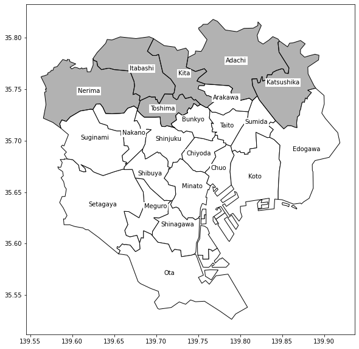
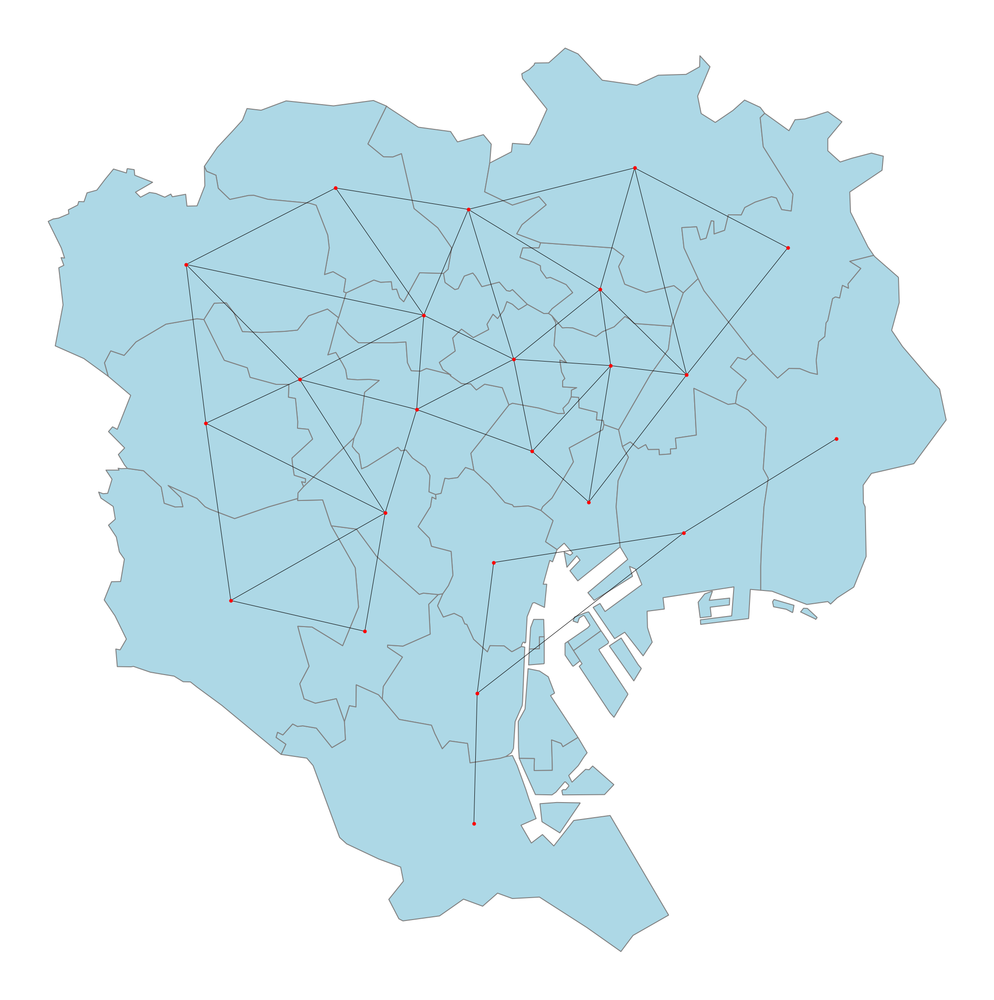
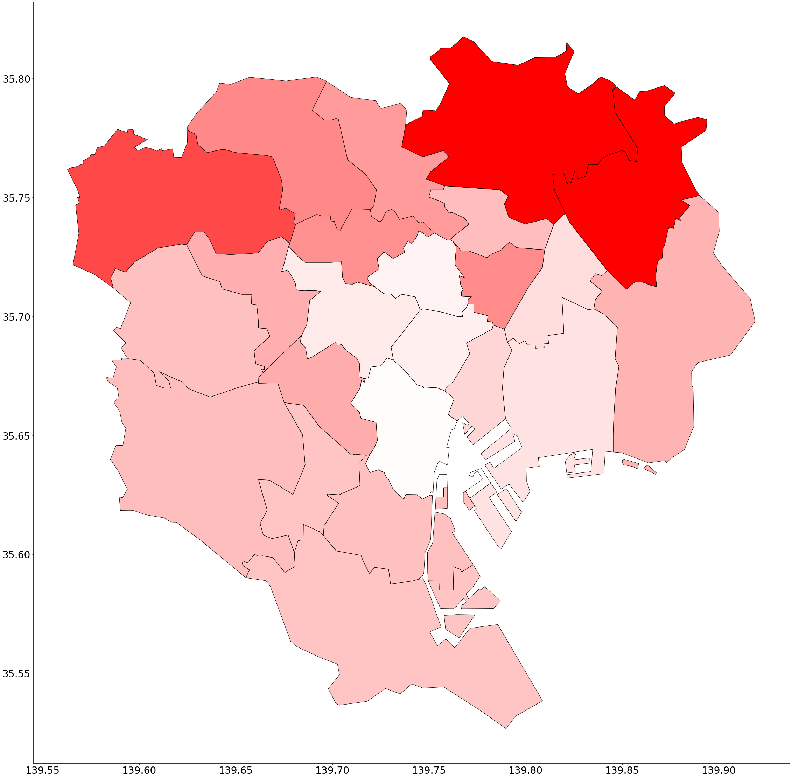

Download this page as a Jupyter notebook src/notebooks/application-neumonia-Tokyo.ipynb.
Neumonia Tokyo Example with echelon.contrib.geo
This is the example of performing the same analysis as this example using the echelon.contrib.geo module.
[1]:
%load_ext autoreload
%autoreload 2
import warnings
warnings.filterwarnings('ignore')
Version Information
[2]:
import echelon
import matplotlib
# For some reason, NetworkX plot functionality (nx.draw()) seems to fail with a newer matplotlib:
# https://stackoverflow.com/questions/63198347/attributeerror-module-matplotlib-cbook-has-no-attribute-iterable
# assert matplotlib.__version__ =='2.2.3'
import echelon.contrib.geo as echelon_geo
for module in [echelon, matplotlib] + echelon_geo.required_modules:
print(module.__name__, module.__version__)
echelon 1.0.3
matplotlib 3.4.3
geopandas 0.10.2
libpysal 4.5.1
Downloading Data
[3]:
import urllib.request
from pathlib import Path
import zipfile
import shutil
data_dir = Path('data/application-neumonia-Tokyo')
data_dir.mkdir(exist_ok=True, parents=True)
_filename = data_dir / 'onepoint.zip'
if not _filename.exists():
urllib.request.urlretrieve('https://fishi.ems.okayama-u.ac.jp/fishioka/onepoint.zip', _filename)
if not (data_dir / 'onepoint').exists():
with zipfile.ZipFile(_filename) as _f:
_f.extractall(data_dir)
for _p in (data_dir / 'onepoint').glob("*"):
shutil.move(str(_p), str(data_dir))
print([a.name for a in (data_dir / 'data').iterdir()])
print([a.name for a in (data_dir / 'shapefile').iterdir()])
['table42.csv', 'table43.csv']
['jpn_adm.prj', 'jpn_adm.sbn', 'jpn_adm.shp', 'jpn_adm.shx', 'jpn_adm.sbx', 'jpn_adm.shp.xml', 'jpn_adm.dbf']
Loading data
GIS data
[4]:
import numpy as np
import geopandas as gpd
gdf = gpd.read_file(data_dir / 'shapefile' / 'jpn_adm.shp')
Tokyo_gdf = gdf[gdf['adm_code'].isin([str(s) for s in range(13101, 13123+1)])]
Tokyo_gdf = Tokyo_gdf.reset_index(drop=True)
display(Tokyo_gdf.head(3))
| adm_code | KEN | SIKUCHOSON | geometry | |
|---|---|---|---|---|
| 0 | 13101 | 東京都 | 千代田区 | POLYGON ((139.77010 35.70527, 139.77310 35.705... |
| 1 | 13102 | 東京都 | 中央区 | POLYGON ((139.78889 35.69466, 139.79041 35.689... |
| 2 | 13103 | 東京都 | 港区 | MULTIPOLYGON (((139.75751 35.62413, 139.75349 ... |
Case count data
[5]:
import pandas as pd
table42 = pd.read_csv(data_dir / 'data/table42.csv')
table43 = pd.read_csv(data_dir / 'data/table43.csv', encoding="shift-jis")
from IPython.display import display
display(table42)
display(table43.head(3))
| age | n | o | |
|---|---|---|---|
| 0 | 1 | 539781 | 2 |
| 1 | 2 | 3174956 | 89 |
| 2 | 3 | 867227 | 2837 |
| ID | Name | n | n1 | n2 | n3 | o | |
|---|---|---|---|---|---|---|---|
| 0 | 1 | 千代田区 | 29987 | 3836 | 21637 | 4514 | 11 |
| 1 | 2 | 中央区 | 71448 | 9705 | 51976 | 9767 | 29 |
| 2 | 3 | 港区 | 117353 | 16505 | 83354 | 17494 | 31 |
Preparing Data
[6]:
## Derived columns
p = table42['o'] / table42['n']
e = table43['n1']*p[0] + table43['n2']*p[1] + table43['n3']*p[2]
SMR = table43['o'] / e
table43['SMR'] = SMR
table43
[6]:
| ID | Name | n | n1 | n2 | n3 | o | SMR | |
|---|---|---|---|---|---|---|---|---|
| 0 | 1 | 千代田区 | 29987 | 3836 | 21637 | 4514 | 11 | 0.714861 |
| 1 | 2 | 中央区 | 71448 | 9705 | 51976 | 9767 | 29 | 0.867116 |
| 2 | 3 | 港区 | 117353 | 16505 | 83354 | 17494 | 31 | 0.519902 |
| 3 | 4 | 新宿区 | 170255 | 14992 | 126589 | 28674 | 74 | 0.759702 |
| 4 | 5 | 文京区 | 101755 | 12938 | 71297 | 17520 | 41 | 0.690695 |
| 5 | 6 | 台東区 | 99346 | 9150 | 69041 | 21155 | 76 | 1.067797 |
| 6 | 7 | 墨田区 | 131814 | 14372 | 90833 | 26609 | 75 | 0.836617 |
| 7 | 8 | 江東区 | 250950 | 33457 | 169528 | 47965 | 131 | 0.809710 |
| 8 | 9 | 品川区 | 187822 | 22083 | 131278 | 34461 | 110 | 0.944241 |
| 9 | 10 | 目黒区 | 129443 | 14973 | 91961 | 22509 | 71 | 0.930927 |
| 10 | 11 | 大田区 | 358052 | 40766 | 245436 | 71850 | 225 | 0.929455 |
| 11 | 12 | 世田谷区 | 424219 | 54450 | 294805 | 74964 | 241 | 0.949945 |
| 12 | 13 | 渋谷区 | 106725 | 11312 | 78039 | 17374 | 59 | 0.998885 |
| 13 | 14 | 中野区 | 164177 | 14627 | 121030 | 28520 | 96 | 0.992292 |
| 14 | 15 | 杉並区 | 268520 | 29447 | 190015 | 49058 | 157 | 0.946232 |
| 15 | 16 | 豊島区 | 143392 | 12627 | 106282 | 24483 | 88 | 1.058730 |
| 16 | 17 | 北区 | 171577 | 17943 | 116052 | 37582 | 131 | 1.037514 |
| 17 | 18 | 荒川区 | 106324 | 12656 | 71551 | 22117 | 71 | 0.954237 |
| 18 | 19 | 板橋区 | 275327 | 31895 | 187862 | 55570 | 201 | 1.073873 |
| 19 | 20 | 練馬区 | 353685 | 45322 | 241210 | 67153 | 265 | 1.169409 |
| 20 | 21 | 足立区 | 341793 | 41844 | 225477 | 74472 | 318 | 1.271495 |
| 21 | 22 | 葛飾区 | 228658 | 28000 | 151607 | 49051 | 214 | 1.298415 |
| 22 | 23 | 江戸川区 | 349342 | 46881 | 238096 | 64365 | 213 | 0.979724 |
[7]:
Tokyo_gdf = Tokyo_gdf.merge(table43[['Name', 'ID']], left_on='SIKUCHOSON', right_on='Name')
[8]:
from echelon.contrib.geo import GISEchelonAnalysis
api = GISEchelonAnalysis()
result = api(table43, Tokyo_gdf, 'ID', 'Name', 'SMR')
print(api.dendrogram(result))
E10(江東区): [港区, 江東区]
(max: 0.8097101496026745)
├── E9(荒川区): [文京区, 千代田区, 新宿区, 墨田区, 中央区, 目黒区, 杉並区, 世田谷区, 荒川区]
│ (max: 0.9542372963272185)
│ ├── E8(中野区): [中野区]
│ │ (max: 0.9922921961759763)
│ │ ├── E7(北区): [北区]
│ │ │ (max: 1.0375137862297261)
│ │ │ ├── E2(練馬区): [豊島区, 板橋区, 練馬区]
│ │ │ │ (max: 1.1694088184210711)
│ │ │ └── E1(葛飾区): [足立区, 葛飾区]
│ │ │ (max: 1.2984145393208892)
│ │ └── E4(渋谷区): [渋谷区]
│ │ (max: 0.9988848483530447)
│ └── E3(台東区): [台東区]
│ (max: 1.0677968541200462)
├── E6(品川区): [大田区, 品川区]
│ (max: 0.9442411594508717)
└── E5(江戸川区): [江戸川区]
(max: 0.9797238558394804)
Hotspot Detection (1)
[10]:
hotspots = api.hotspots(result, (table43, 'ID', 'n', 'o'), score='binomial')
hotspots
[10]:
| spot | score | c(Z) | log_lambda | |
|---|---|---|---|---|
| 6 | [20, 19, 16, 22, 21, 17] | 46.209348 | 1217 | 46.209348 |
| 10 | [14, 17, 20, 19, 16, 22, 21, 13, 6, 18] | 41.870986 | 1519 | 41.870986 |
| 1 | [22, 21] | 39.235993 | 532 | 39.235993 |
| 8 | [17, 20, 19, 16, 22, 21, 13, 14] | 37.607581 | 1372 | 37.607581 |
| 0 | [22] | 14.606849 | 214 | 14.606849 |
| 3 | [20, 19] | 5.669690 | 466 | 5.669690 |
| 4 | [20, 19, 16] | 4.310773 | 554 | 4.310773 |
| 2 | [20] | 3.466766 | 265 | 3.466766 |
| 5 | [6] | 1.187074 | 76 | 1.187074 |
| 7 | [13] | 0.000000 | 59 | 0.000000 |
| 9 | [23] | 0.000000 | 213 | 0.000000 |
| 11 | [9] | 0.000000 | 110 | 0.000000 |
| 12 | [9, 11] | 0.000000 | 335 | 0.000000 |
Plotting Detected Hotspots (1)
[9]:
## Conversion to avoid encoding failures.
AlphabetNames = {
'千代田区': 'Chiyoda', '中央区': 'Chuo', '港区': 'Minato', '新宿区': 'Shinjuku',
'文京区': 'Bunkyo', '台東区': 'Taito', '墨田区': 'Sumida', '江東区': 'Koto',
'品川区': 'Shinagawa', '目黒区': 'Meguro', '大田区': 'Ota', '世田谷区': 'Setagaya',
'渋谷区': 'Shibuya', '中野区': 'Nakano', '杉並区': 'Suginami', '豊島区': 'Toshima',
'北区': 'Kita', '荒川区': 'Arakawa', '板橋区': 'Itabashi', '練馬区': 'Nerima',
'足立区': 'Adachi', '葛飾区': 'Katsushika', '江戸川区': 'Edogawa'
}
Tokyo_gdf['Name'] = Tokyo_gdf['SIKUCHOSON'].map(lambda s: AlphabetNames[s])
[11]:
%matplotlib inline
import matplotlib.pyplot as plt
api.plot_hotspot(hotspots)
plt.show()

Bonus: Plotting Detected Hotspots (2)
Discounting by the number of districts.
[12]:
# hotspots = analyzer.hotspots(result, data=(table43, 'Name', 'n', 'o'), score='binomial')
# hotspots['score'] = hotspots['score'] / hotspots['spot'].map(len)
# hotspots = hotspots.sort_values('score', ascending=False)
# hotspots
[13]:
# from echelon.contrib.geo import GISPlotter
# GISPlotter(Tokyo_gdf, 'name').plot_hotspot(hotspots, label_col='name', options=dict(nth=1, id_col='SIKUCHOSON'))
# None
Summary
[14]:
# import numpy as np
# import pandas as pd
# import geopandas as gpd
# from echelon.api import DataFrameEchelonAnalysis
# from echelon.contrib.geo import GISAdjacency
# from echelon.contrib.geo import GISPlotter
# ## Load data
# table42 = pd.read_csv(data_dir / 'data/table42.csv')
# table43 = pd.read_csv(data_dir / 'data/table43.csv', encoding="shift-jis")
# ## Compute data
# p = table42['o'] / table42['n']
# e = table43['n1']*p[0] + table43['n2']*p[1] + table43['n3']*p[2]
# SMR = table43['o'] / e
# table43['SMR'] = SMR
# ## Attach adjacency information based on shape file
# gdf = gpd.read_file(data_dir / 'shapefile' / 'jpn_adm.shp')
# Tokyo_gdf = gdf[gdf['adm_code'].isin([str(s) for s in range(13101, 13123+1)])].reset_index(drop=True)
# table43['adjacency'] = (GISAdjacency(Tokyo_gdf, id_colname='SIKUCHOSON').to_series()['adjacency'])
# ## Construct Echelon
# analyzer = DataFrameEchelonAnalysis()
# result = analyzer(table43, 'SMR', 'Name', 'adjacency')
# ## Scan hot spots
# hotspots = analyzer.hotspots(result, data=(table43, 'Name', 'n', 'o'), score='binomial')
# ## Plot hot spots
# Tokyo_gdf['name'] = Tokyo_gdf['SIKUCHOSON'].map(lambda s: AlphabetNames[s])
# GISPlotter(Tokyo_gdf, 'name').plot_hotspot(hotspots, label_col='name', options=dict(nth=1, id_col='SIKUCHOSON'))
# None
Bonus: base plot
[15]:
%matplotlib inline
import matplotlib.pyplot as plt
api.plot_adjacency()
plt.show()

Bonus: Data Visualization
[16]:
%matplotlib inline
import matplotlib.pyplot as plt
api.plot_column('SMR', lambda v: min(1, v * .8) ** 5)
plt.show()

[ ]: